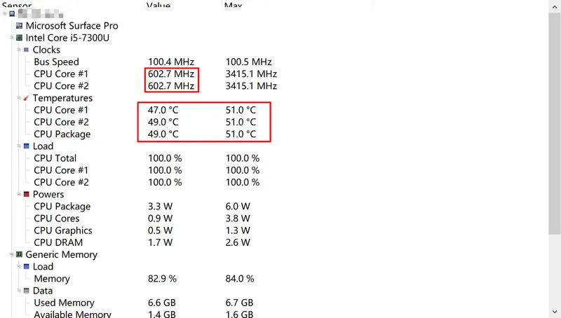

Surface Pro 在夏天CPU锁频
夏天到了，不知道你们有没有发现购买的 Surface Pro 设备的频率莫名其妙地降低到 0.4 甚至 0.2 GHz？
检查是否为 CPU 温度的问题
提到锁频，第一时间反映的就是「过热」，所以先尝试获取 CPU 的温度数据， 检查是否为此原因。
在 GitHub 上有个叫 「OpenHardwareMonitor」[#fn-site-gh-ohm]_ 的项目提供了硬件监控功能，这是用 C# 编写的。其有一个官方网站 2 ，提供了预编译包的下载。但你也可以通过 scoop 下载，其 manifest 位于 extras 仓库中:
scoop install openhardwaremonitor
它可以挂在后台运行，甚至提供了一个 Web 服务用来展示数据：
OpenHardwareMonitor 的 Web UI
OpenHardwareMonitor 可以通过 CPU 的 ring0 获取温度数据，相对比较准确。
Surface Pro CPU 降频的可能原因
首先怀疑是过热导致的降频
经过一段时间的使用（在 B 站看了辉夜第4集），成功观察到 CPU 频率降低到 400 MHz 左右。截图上为 600 MHz 是因为当时太卡了，截图工具过了 4~5 秒才打开。

CPU 时钟频率降低
见知乎上的这个讨论 4，可能是 SAM（Surface System Aggregator） 运行错误， 导致 CPU 在安全阈值之下被降频。
SAM（Surface System Aggregator） 是 Surface 上 EC（Embedded Controller） 的实现，用于管理设备的各组件，是高于操作系统甚至 BIOS/UEFI 的固件 5 。
利用 Intel XTU 调试 CPU
参考 3 。Intel XTU 工具的下载链接为 https://downloadcenter.intel.com/zh-cn/download/24075/-XTU